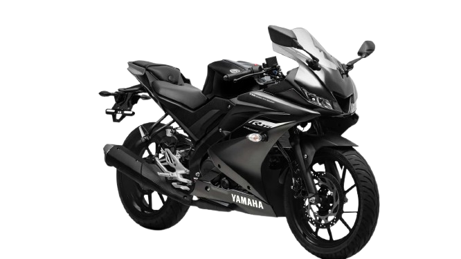
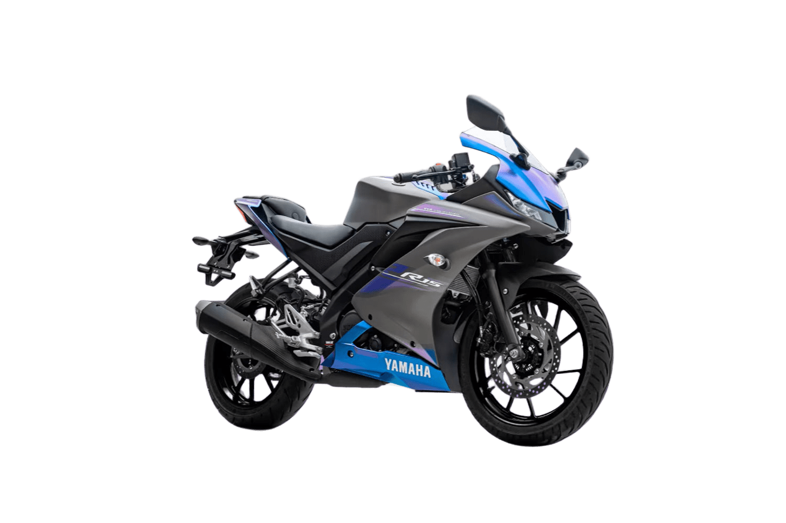
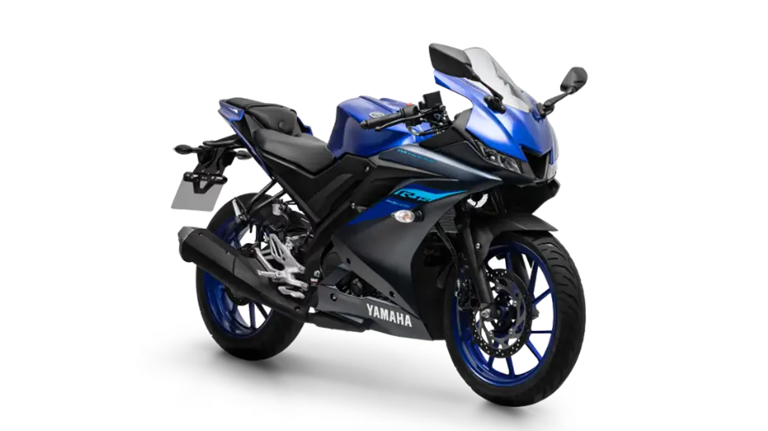

A Yamaha YZF-R15 ABS é uma moto de baixa cilindrada, mas com uma potência surpreendente.

A Yamaha R15 é uma moto esportiva que combina design agressivo com tecnologia avançada, oferecendo uma experiência de pilotagem emocionante.
Performance

- Motor: R15 é equipada com um motor de 155cc com refrigeração líquida, que entrega uma potência e torque surpreendente para sua faixa de cilindrada. Seu design aerodinâmico e suspensão ajustável proporcionam estabilidade e conforto em altas velocidades.
- Injeção eletrônica: A moto conta com um sistema de injeção eletrônica que garante eficiência de combustível e desempenho otimizado, além de um painel digital completo que exibe informações essenciais para o piloto.
- Freios: O sistema de freios ABS de série aumenta a segurança, evitando travamentos em frenagens bruscas.
- Design: A Yamaha R15 é ideal para quem busca uma moto esportiva ágil, leve e com excelente relação custo-benefício.
- Pneus: A moto é equipada com pneus de alta performance que garantem aderência e estabilidade em curvas, tornando-a perfeita para pilotagem esportiva.
- Iluminação LED: A Yamaha R15 também conta com um sistema de iluminação LED, que proporciona melhor visibilidade e economia de energia.
- Custo x Benefício: A Yamaha R15 é uma excelente opção para quem busca uma moto de entrada no mundo das esportivas, oferecendo tecnologia e performance em um pacote acessível.
Tecnologia e Inovação

- Refrigeração Liquida : O motor com refrigeração líquida é uma das principais inovações, proporcionando potência e eficiência.
- Válvula Variável (VVA): O sistema VVA ajusta a abertura das válvulas conforme a rotação do motor, otimizando a entrega de potência em diferentes faixas de RPM.
- Painel Digital: O painel digital completo exibe informações como velocidade, rotação do motor, consumo de combustível,odometro total e parcial, hora e Shiflight.
- Suspensão Ajustável: A suspensão dianteira invertida e a traseira monoamortecida oferecem conforto e estabilidade em diversas condições de pilotagem.
- Tecnologia DiASil: A tecnologia DiAsil da Yamaha contribui para uma menor vibração, melhor dissipação de calor e ganho de performance. O câmbio de 6 marchas permite uma pilotagem emocionante e sua embreagem assistida e deslizante evita o travamento da roda traseira em frenagens bruscas e permite que as trocas de marcha sejam feitas de forma controlada e suave. E o chassi do tipo Deltabox traz equilíbrio entre rigidez e leveza para entregar mais estabilidade em altas velocidades e curvas.
Robustez e Esportividade

- Inspiração em motos de competição: Seu design inspirado nas motos de competição, com linhas agressivas e detalhes em LED, a torna uma das mais atraentes da categoria.
- Suspensão: A suspensão da R15 é nitidamente mais robusta quando comparada às que equipam outras motocicletas até 160cc
- Chassi: O chassi é projetado para oferecer uma pilotagem esportiva, com uma geometria que favorece a agilidade e a estabilidade em curvas.
- Resistência: Na traseira é do tipo monocross em alumínio, garantindo baixo peso e minimizando torções, e a fixação do amortecedor é através de links, conferindo maior conforto e suavidade na absorção de impactos.
- Rodas: Com 10 raios, as rodas em liga leve têm diâmetro de 17 polegadas e são calçadas por pneus largos, sendo o dianteiro 100/80-17 e o traseiro 140/70-17. Isso garante um comportamento mais estável, maior aderência nas curvas e melhor capacidade de absorção de impactos para uma pilotagem mais prazerosa
Veja as cores da Yamaha YZF-R15 ABS 2025!


